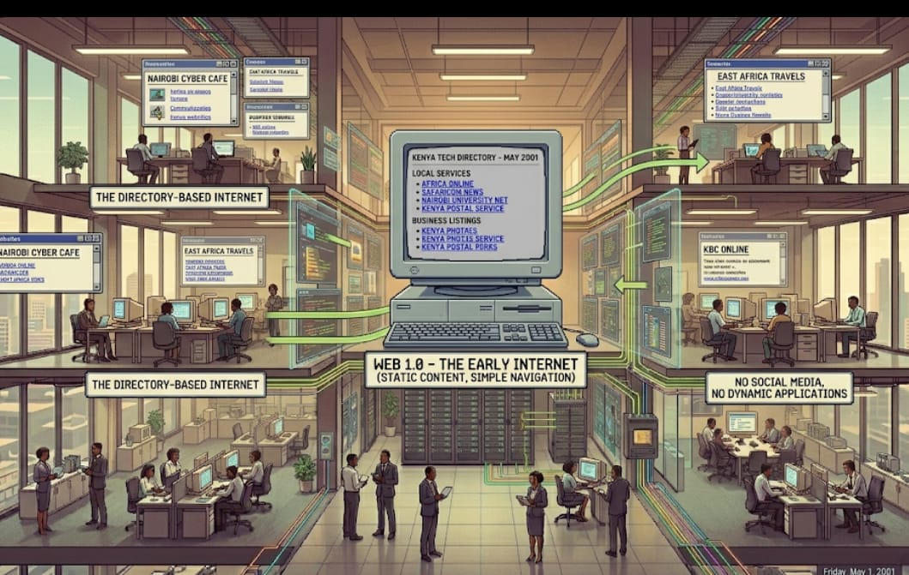

Definition
Web 1.0 refers to the first generation of the World Wide Web, characterized by static web pages that provided information without allowing user interaction. It was mainly designed for reading content rather than contributing to it.
Web 1.0 pages were simple, with limited design and functionality, and were typically created using basic HTML.
Explanation
During the Web 1.0 era, users could only view content published by website owners, with little or no opportunity to interact or provide feedback.
There were no social media platforms, comment sections, or dynamic content. This made the web more like a digital library where information was consumed passively.